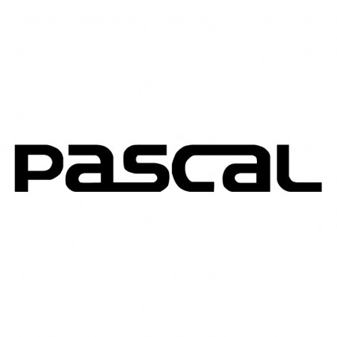

Pascal (programming language)About PascalPascal is a historically influential imperative and procedural programming language, designed in 1968–1969 and published in 1970 by Niklaus Wirth as a small and efficient language intended to encourage good programming practices using structured programming and data structuring. A derivative known as Object Pascal designed for object-oriented programming was developed in 1985.Wirth's intention was to create an efficient language (regarding both compilation speed and generated code) based on so-called structured programming, a concept which had recently become popular. Pascal has its roots in the ALGOL 60 language, but also introduced concepts and mechanisms which (on top of ALGOL's scalars and arrays) enabled programmers to define their own complex (structured) datatypes, and also made it easier to build dynamic and recursive data structures such as lists, trees and graphs. Important features included for this were records, enumerations, subranges, dynamically allocated variables with associated pointers, and sets. To make this possible and meaningful. OverviewPascal has a strong typing on all objects, which means that one type of data cannot be converted or interpreted as another without explicit conversions. Similar mechanisms are standard in many programming languages today. Other languages that influenced Pascal's development were COBOL, Simula 67, and Wirth's own ALGOL W. Pascal, like many programming languages of today (but unlike most languages in the C family), allows nested procedure definitions to any level of depth, and also allows most kinds of definitions and declarations inside subroutines (procedures and functions). This enables a very simple and coherent syntax where a complete program is syntactically nearly identical to a single procedure or function  Click on the Image to view the complete Pascal programming Tutorial |